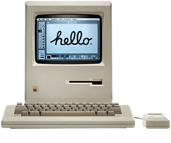
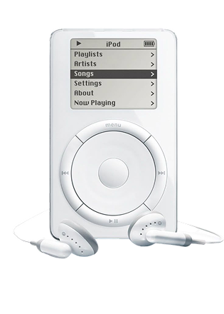
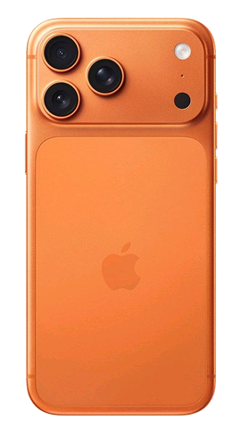
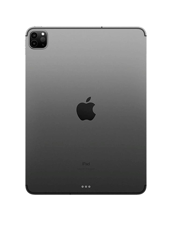
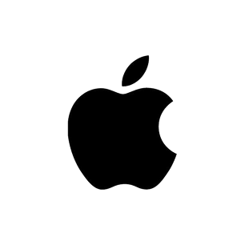

Steve Jobs believed technology should not only be powerful, but also
beautiful and meaningful. He obsessed over details other companies
overlooked, and turned computers, music players and phones into
objects people loved to use — click the
in the menu above to see how the company he built grew from a garage
into the world's most valuable one.
Iconic Products
Five products, one obsession: making complicated things feel simple.

Macintosh
The computer that started a revolution.

iPod
1,000 songs in your pocket.

iPhone
A device that changed everything.

iPad
A new category of technology.

Apple
Think Different.
"Stay hungry. Stay foolish."
The story behind Apple
From a garage in Los Altos to one of the world's most influential technology companies.
1976 — The Beginning
Steve Jobs and Steve Wozniak built the first Apple computer in a garage.
1984 — Macintosh
Apple introduced a new way of using computers with simplicity and design.
2007 — iPhone
Steve Jobs introduced a device that changed the mobile industry forever.